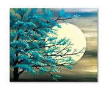
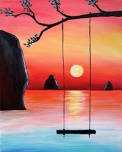
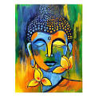
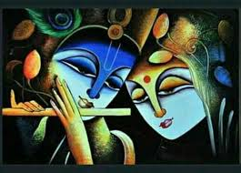

ART_BY_ARTISTANTS
 painting, the expression of ideas and emotions,
with the creation of certain aesthetic qualities,
in a two-dimensional visual language.
The elements of this language—its shapes, lines, colours, tones, and textures—are used in various ways to
produce sensations of volume, space, movement, and light on a flat surface.
These elements are combined into expressive patterns in order to represent real or supernatural phenomena,
to interpret a narrative theme, or to create wholly abstract visual relationships.
An artist’s decision to use a particular medium, such as tempera, fresco, oil, acrylic, watercolour or
other water-based paints,
ink, gouache, encaustic, or casein, as well as the choice of a particular form, such as mural, easel,
panel, miniature, manuscript illumination,
scroll, screen or fan, panorama, or any of a variety of modern forms,
is based on the sensuous qualities and the expressive possibilities and limitations of those options.
The choices of the medium and the form, as well as the artist’s own technique,
combine to realize a unique visual image.
 During the 19th century painters in Western societies began to lose their social position and secure patronage.
Some artists countered the decline in patronage support by holding their own exhibitions and charging an entrance fee.
Others earned an income through touring exhibitions of their work.
The need to appeal to a marketplace had replaced the similar (if less impersonal) demands of patronage,
and its effect on the art itself was probably similar as well.
Generally, artists in the 20th century could reach an audience only through commercial galleries and public museums,
although their work may have been occasionally reproduced in art periodicals.
They may also have been assisted by financial awards or commissions from industry and the state.
They had, however, gained the freedom to invent their own visual language and to experiment with
new forms and unconventional materials and techniques.
For example, some painters combined other media, such as sculpture,
with painting to produce three-dimensional abstract designs.
Other artists attached real objects to the canvas in collage fashion or
used electricity to operate coloured kinetic panels and boxes.
Conceptual artists frequently expressed their ideas in the form of a proposal for an unrealizable project,
while performance artists were an integral part of their own compositions.
The restless endeavour to extend the boundaries of expression in art produced continuous international stylistic changes.
The often bewildering succession of new movements in painting was further stimulated by the swift
interchange of ideas by means of international art journals,traveling exhibitions, and art centres.
Such exchanges accelerated in the 21st century with the explosion of international art fairs and the advent of social media,
the latter of which offered not only new means of expression but direct
communication between artists and their followers.
 Techniques and methods: Whether a painting reached completion by careful stages or was executed directly
by a hit-or-miss alla prima method (in which pigments are laid on in a single application) was once
largely determined by the ideals and established techniques of its cultural tradition.
For example, the medieval European illuminator’s painstaking procedure,
by which a complex linear pattern was gradually enriched with gold leaf and precious pigments,
was contemporary with the Song Chinese Chan (Zen) practice of immediate, calligraphic brush painting,
following a contemplative period of spiritual self-preparation. More recently,
artists have decided the techniques and working methods best suited to their aims and temperaments.
In France in the 1880s, for instance, Seurat might be working in his studio on drawings, tone studies,
and colour schemes in preparation for a large composition at the same time that, outdoors,
Monet was endeavouring to capture the effects of afternoon light and atmosphere,
while Cézanne analyzed the structure of the mountain Sainte-Victoire with deliberated brush strokes,
laid as irrevocably as mosaic tesserae (small pieces, such as marble or tile)
 Mediums : By technical definition, mediums are the liquids added to paints to bind them and make them workable.
They are discussed here, however, in the wider meaning of all the various paints, tools, supports, surfaces,
and techniques employed by painters. The basis of all paints is variously coloured pigment, ground to a fine powder.
The different expressive capacities and characteristic final surface texture of each medium are determined by
the vehicle with which it is bound and thinned, the nature and surface preparation of the support,
and the tools and technique with which it is handled.
pigments are derived from various natural and artificial sources.
The oldest and most permanent pigments are the blacks, prepared from bone and charcoal, and the clay earths,
such as raw umber and raw sienna, which can be changed by heating into darker, warmer browns.